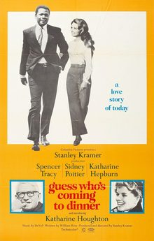

Guess Who's Coming to Dinner

Starring: Katharine Hepburn, Spencer Tracy, Sidney Poitier
Director: Stanley Kramer
Writer: William Rose
Producer: Stanley Kramer
Guess Who's Coming to Dinner is a 1967 American romantic comedy drama film produced and directed by Stanley Kramer and written by William Rose. It stars Spencer Tracy (in his final role), Sidney Poitier, Katharine Hepburn, and Hepburn's niece Katharine Houghton (in her debut film role).
Trivia
- Won the Silver nugget for the best foreign film.
- Won the Academy Award for Best Actress.
- Won the Academy Award for Best Writing, Original Screenplay.
- Also nominated for: Academy Award for Best Picture; Academy Award for Best Supporting Actress; Academy Award for Best Supporting Actor; Academy Award for Best Actor; and 4 more.
- According to Kramer, he and Rose intentionally structured the film to debunk ethnic stereotypes.
- Kramer and Rose completed the film script in five weeks.
- Kramer stated later that the principal actors believed so strongly in the premise that they agreed to act in the project even before seeing the script.
Filming Locations
- San Francisco
Previous Showings
1 Run • 1 Festival
All runs on record (1):
- June 13 - 14, 2007Katharine Hepburnw/ The Lion in Winter